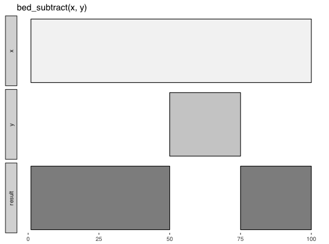

Subtract y intervals from x intervals.
bed_subtract(x, y, any = FALSE)
| x | |
|---|---|
| y | |
| any | remove any |
input tbls are grouped by chrom by default, and additional
groups can be added using dplyr::group_by(). For example,
grouping by strand will constrain analyses to the same strand. To
compare opposing strands across two tbls, strands on the y tbl can
first be inverted using flip_strands().
http://bedtools.readthedocs.io/en/latest/content/tools/subtract.html
Other multiple set operations: bed_closest,
bed_coverage, bed_intersect,
bed_map, bed_window
x <- trbl_interval( ~chrom, ~start, ~end, 'chr1', 1, 100 ) y <- trbl_interval( ~chrom, ~start, ~end, 'chr1', 50, 75 ) bed_glyph(bed_subtract(x, y))x <- trbl_interval( ~chrom, ~start, ~end, "chr1", 100, 200, "chr1", 250, 400, "chr1", 500, 600, "chr1", 1000, 1200, "chr1", 1300, 1500 ) y <- trbl_interval( ~chrom, ~start, ~end, "chr1", 150, 175, "chr1", 510, 525, "chr1", 550, 575, "chr1", 900, 1050, "chr1", 1150, 1250, "chr1", 1299, 1501 ) bed_subtract(x, y)#> # A tibble: 7 x 3 #> chrom start end #> <chr> <dbl> <dbl> #> 1 chr1 100 150 #> 2 chr1 175 200 #> 3 chr1 250 400 #> 4 chr1 500 510 #> 5 chr1 525 550 #> 6 chr1 575 600 #> 7 chr1 1050 1150bed_subtract(x, y, any = TRUE)#> # A tibble: 1 x 3 #> # Groups: chrom [?] #> chrom start end #> <chr> <dbl> <dbl> #> 1 chr1 250 400